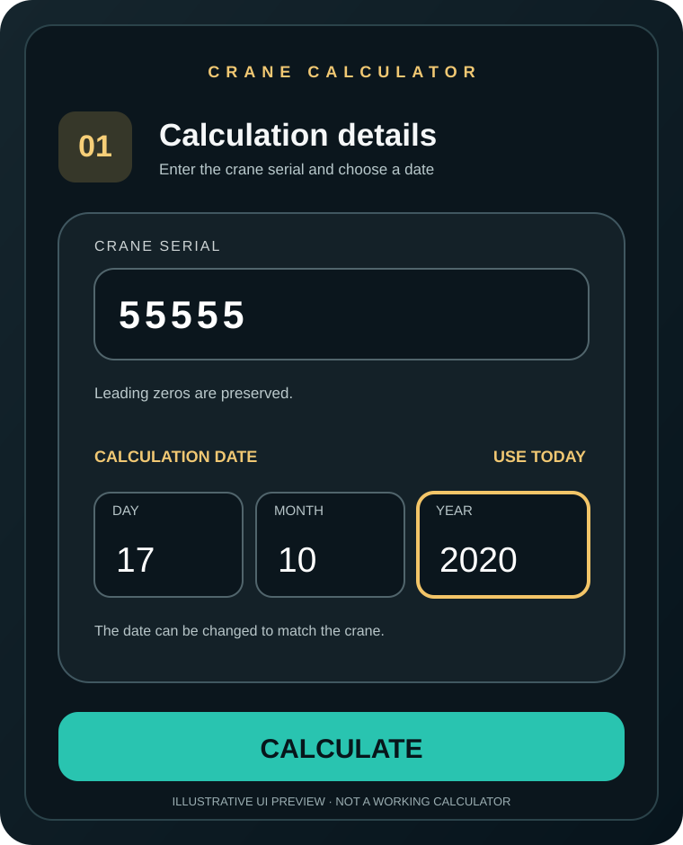

حاسبة Daily Code مع إمكانية تغيير التاريخ
هل تبحث عن تطبيق Liebherr Daily Code Calculator؟ يتيح LIE_CRANE V2 إدخال الرقم التسلسلي للونش واختيار اليوم والشهر والسنة يدويًا، بما في ذلك تاريخ سابق مختلف عن تاريخ اليوم، لمهام الخدمة الفنية التي تملك تصريحًا بتنفيذها.
تحميل APK إصدار 2.2.4 مهتم بنسخة iPhone؟ سجّل اهتمامكتحميل مباشر من GitHub · التطبيق مستقل وليس تابعًا أو معتمدًا من Liebherr

إيه اللي بيميز LIE_CRANE V2؟
تاريخ سابق
تقدر تدخل تاريخ الونش بنفسك بدل الاعتماد على تاريخ اليوم فقط، مع خيار Use Today.
مستويات النتائج
واجهة منظمة تعرض النتائج في ثلاثة مستويات منفصلة، للاستخدام الفني المصرح به فقط.
الترخيص داخل البرنامج
التحقق من الجهاز، والتجربة للمؤهلين، وحالة الترخيص والدعم داخل التطبيق نفسه.
التجربة المجانية وشراء الترخيص
حمّل البرنامج من الإصدار الرسمي، وثبّته على جهاز أندرويد، واتبع خطوات تسجيل الجهاز والتحقق من أهلية التجربة من داخل التطبيق. إتاحة التجربة مش مضمونة لكل جهاز وتعتمد على التحقق من السيرفر.
لو عايز تشتري ترخيص، تجدده، أو تحتاج مساعدة في الجهاز، افتح Renew / Buy License أو Support & Contact في Client Portal. فريق الدعم هو المسؤول عن الرد على استفسارات الشراء والتفعيل.
تفاصيل الإصدار الرسمي · الأسئلة الشائعة بالإنجليزي